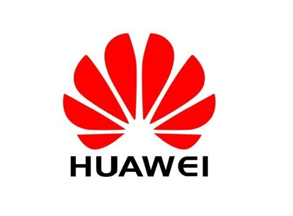

Panelists:
Jia He, Huawei, Senior 5G Channel Technologist
Topic:Channel & Spectrum
Xuming Fang, Southwest Jiaotong University, Professor
Topic:Network & PHY
Chuan Huang, University of Electronic Science and Technology of China, Professor
Topic:System scheduling
Yongjie Bai, Rohde & Schwarz China Ltd., Director
Topic:Architecture & Prototype & Instrument
Kai Kang, University of Electronic Science and Technology of China, Professor
Topic:Chips
Abstract:Frequency bands above 6 GHz, especially above 30 GHz, are becoming promising candidate for 5G mobile communications due to up to tens of GHz of available spectrum. Although some bands have been widely applied to point-to-point communications, their applications to mobile communication are still at a very early stage. It has many challenges including higher path, body, penetration and foliage loss, and need to address many issues such as mobility, multiple user access, coverage, adaptive access and backhaul and deployment in dense network. Promising techniques include novel beamforming techniques using massive antenna arrays, low form factor chip-scale antennas design, adaptive backhauling and various system and deployment innovations. Despite some progress in the above-mentioned techniques, a complete system design remains elusive.
